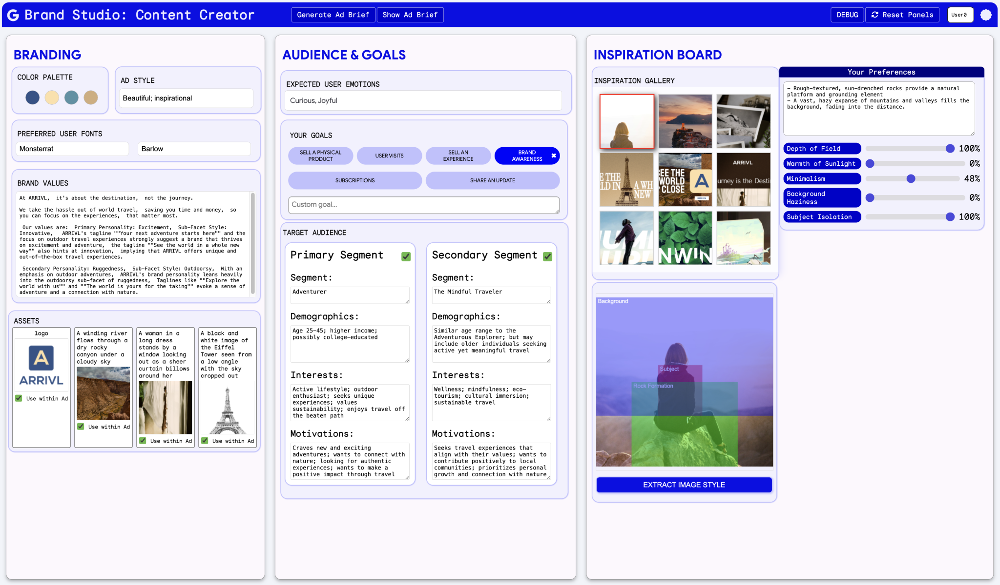
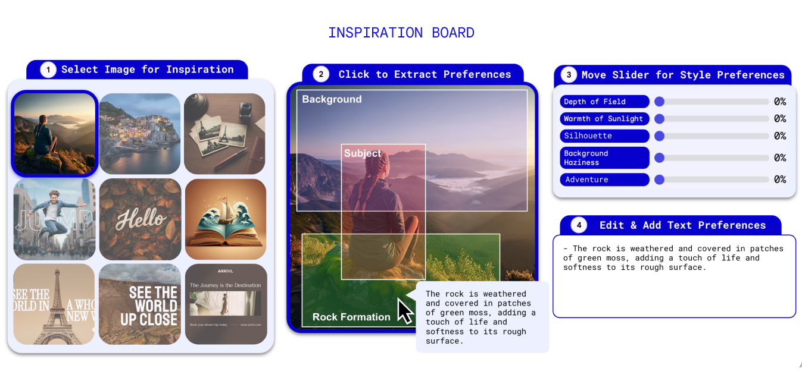
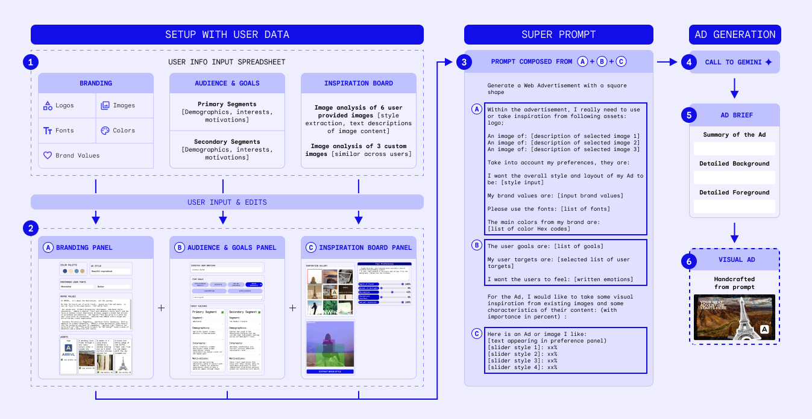

Abstract
Small business owners (SBOs) often lack the resources and design experience needed to produce high-quality advertisements. To address this, we developed ACAI (AI Co-Creation for Advertising and Inspiration), a GenAI-powered multimodal advertisement creation tool, and conducted a user study with 16 SBOs in London.
Our findings reveal that structured inputs enhance user agency and control while improving AI outputs by facilitating better brand alignment, enhancing AI transparency, and offering scaffolding that assists novice designers in formulating prompts. Building on our findings, we propose three capabilities: contextual intelligence, adaptive interactions, and data management, with corresponding design recommendations to advance the co-creative attributes of AI-mediated design tools.
Introduction
Small business owners constitute a significant portion of the global economy, with 5.6 million in the UK alone representing 98% of businesses. Despite their economic importance, SBOs often face challenges in creating effective advertisements, which can make it difficult to showcase their brands and engage potential customers.
Research Questions
- How can GenAI tools be designed to effectively support novice designers, such as SBOs, in navigating the advertisement creation process?
- How can GenAI tools ensure the generation of brand-aligned advertisements that authentically reflect the unique identity of small businesses?
Key Findings
🎯 Structured Input Scaffolding
ACAI's three-panel interface (Branding, Audience & Goals, Inspiration) enhanced participants' sense of control and creative agency by providing a framework for systematically customizing branding inputs.
🎨 Multimodal Prompting
The Inspiration Board allowed SBOs to extract AI-generated technical design descriptors from visual elements, bridging the gap between creative vision and technical design language.
🏢 Brand Alignment
Structured inputs helped AI understand business brand identity, resulting in outputs more likely to align with the brand's overall aesthetic and messaging compared to free-form prompts.
🔍 Enhanced Transparency
Users could clearly observe how modifications in individual input fields directly influenced the final output, increasing perceived agency and control over the AI system.
The ACAI System
ACAI (AI Co-Creation for Advertising and Inspiration) is a GenAI-powered multimodal advertisement creation tool specifically designed to assist novice users like SBOs in creating brand-aligned advertisements.
Figure 1: ACAI Interface Overview
Inspiration Board Feature
Super Prompt Generation Process
How ACAI Works
- User Input: SBOs upload brand assets and specify preferences through the structured interface
- Super Prompt Generation: ACAI concatenates all inputs into a comprehensive "super prompt"
- AI Processing: The system sends the super prompt to Gemini 1.5 Pro to generate an Ad Brief
- Ad Brief Creation: A detailed brief with summary, background, and foreground descriptions is produced
- Visual Design: The brief guides the creation of brand-aligned advertisements
Design Recommendations
Based on our findings, we propose three key capabilities for advancing AI-mediated design tools:
Contextual Intelligence
Implement contextual memory systems that retain past design decisions, learn user preferences, and provide bi-directional feedback for truly collaborative co-creation.
Adaptive Interfaces
Develop fluid control mechanisms that dynamically adjust AI assistance based on user expertise, task complexity, and evolving needs throughout the design process.
Data Management
Ensure robust privacy safeguards with local data control, improved transparency about data usage, and clear intellectual property protection for business branding.
Contextual Intelligence Framework
CONTEXTUAL INTELLIGENCE
Leading to less generic outputs
UPL
User Preference LearningUser preference learning updates CM over time
CM
Contextual MemoryCM informs responses in BDF
BDF
Bi-Directional FeedbackBDF learns preferences and feeds back to UPL
Dynamic, cyclical process where each component informs and is informed by the others
Key Implementation Strategies
- Long-Term Memory for Brand Consistency: Store high-level summaries of brand values, target audiences, and visual styles
- Cross-Session Design Recall: Retain project-specific design decisions across different sessions
- Temporal Awareness: Evaluate design elements based on their relevance over time
- Multimodal Sensing: Interpret users' emotional states and cognitive load through various modalities
- Scrutable Preference Learning: Allow users to inspect and modify the AI's understanding of their preferences
User Study
We conducted empirical research with 16 small business owners in London to evaluate ACAI's effectiveness:
| Study Metrics | Results |
|---|---|
| Number of Participants | 16 SBOs in London |
| Business Domains | Online retail, auto services, healthcare, professional services, and more |
| Age Range | 20 to over 61 years |
| Business Experience | Under 1 year to over 10 years ownership |
| Most Exciting Feature | Inspiration Board (10 out of 16 participants) |
| AI Tool Usage | 100% reported using AI to some extent in their businesses |
Access the Research
Download the full paper and supplementary materials
Research Contributions & How to Cite This Work
Contributions. This paper introduces ACAI (AI Co-Creation for Advertising and Inspiration), a multimodal generative AI system that supports small business owners in creating brand-aligned advertisements. It contributes to research on Human–AI co-creation and contextual GenAI by:
- Identifying prompt usability challenges and cognitive barriers faced by novice users in free-text interfaces.
- Proposing a structured and multimodal interaction design (Branding, Audience & Goals, and Inspiration Board panels) that scaffolds user agency and reduces cognitive load.
- Demonstrating workflow-aligned generative AI integration within small-business advertising practices.
- Providing a user-centred evaluation showing improved brand alignment, creative control, and transparency.
- Advancing the understanding of Human–AI collaboration for non-experts in design-oriented domains.
When to Cite This Work
This paper can be cited when discussing:
- Prompt usability and cognitive barriers in generative AI tools for novices.
- Structured or multimodal prompting as an accessibility mechanism.
- Workflow alignment and participatory co-design in Human–AI collaboration.
- Design and evaluation of contextual GenAI systems for real-world creative work.
Citation
Karnatak, N., Baranes, A., Marchant, R., Butler, T., & Olson, K. (2025). ACAI for SBOs: AI Co-creation for Advertising and Inspiration for Small Business Owners. arXiv:2503.06729. https://doi.org/10.48550/arXiv.2503.06729
@article{karnatak2025acai,
title={ACAI for SBOs: AI Co-creation for Advertising and Inspiration for Small Business Owners},
author={Karnatak, Nimisha and Baranes, Adrien and Marchant, Rob and Butler, Tríona and Olson, Kristen},
journal={arXiv preprint arXiv:2503.06729},
year={2025},
organization={Google DeepMind}
}